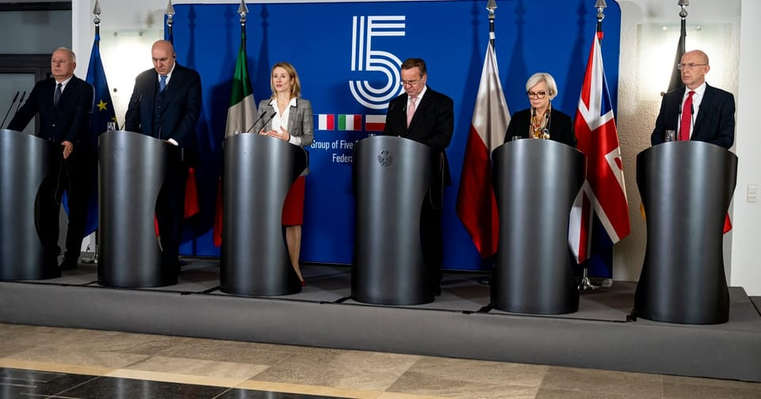

世界苦茶11月15日新闻 | 46条 | 特朗普首次对台军售引发不满

特朗普首次对台军售引发不满 | Nexperia中荷会谈前继续交锋 | 美国瑞士关税战结束 | 爱泼斯坦案重新成为美国焦点
苦茶数据
美元兑人民币：7.10（昨日7.09，前日7.09）
美元兑日元：154.55（昨日154.48，前日154.45）
上证指数：休市（昨日3990，前日4029)
标普500指数：休市（昨日6734，前日6737）
比特币：96167（昨日97264，前日102956）
布伦特原油：64.39（昨日64.06，前日63.24）
中国新闻
• 下水11个月后 中国四川舰首次海试。
有“无人机航母”之称的中国首艘自主研制建造的076型两栖攻击舰“四川”号，在下水11个月后开展首次海试。据中国国防部官网消息，中国076两栖攻击舰首舰四川舰星期五上午9时许，从上海沪东中华造船厂码头解缆启航，赴相关海域开展首次航行试验任务，将主要检测验证动力、电力等系统的可靠性和稳定性。公开资料显示，自去年12月下水以来，四川舰建造工作按计划稳步推进，顺利完成系泊试验和装设备调试，具备出海试验的技术条件。四川舰舷号为“51”，满载排水量四万余吨，设置双舰岛式上层建筑和全纵通飞行甲板，创新应用电磁弹射和阻拦技术，可搭载固定翼飞机、直升机、两栖装备等。
• 网红峰哥亡命天涯被全网禁止关注。
拥有281万粉丝的博主“峰哥亡命天涯”多个社媒账号被禁止关注。微博显示因违反法律法规或《微博社区公约》被禁止关注。 其B站、小红书、抖音账号也被禁止关注。他的视频以访谈和猎奇内容而为人所知，其“性压抑论”与户晨风提出的“苹果安卓相对论”、抖音博主好师兄戴梦提出的“力工思维论（力工梭哈论）”被一些中国网友称为“当今社会三大解构性理论”。这些映射中国底层焦虑的网红“三大理论”已全面遭到铁拳打击。
• 特稿：中国大陆借全球通缉建构对台管辖权 两岸法律战迈入新阶段。
中国大陆在过去半个月内接连扬言悬赏、追捕主张台独的台湾立委沈伯洋与网红八炯、闽南狼等人，以落实“惩独22条意见”并主张对台管辖权。受访学者分析，台海两岸的法律战已进入执法层面的斗争，未来要如何应对这些被通缉者遭拒绝入境甚至引渡到大陆等情况，将是民进党政府无法回避的问题。自10月下旬以来，中国大陆加速开展各项对台行动，除了纪念台湾光复80周年，抛出更具体的“统一后”安排以及两岸共同实践民族复兴的怀柔主张之外，同时也接连以法律形式祭出多项反独行动。重庆市公安局10月28日发布警情通报，指民进党籍的台湾立委沈伯洋通过发起，建立台独分裂组织“黑熊学院”等方式，从事分裂国家犯罪活动。
• 中国副外长召见日大使反应升级 分析：黄牌警告高市 避免骨牌效应。
中国对日本首相高市早苗的“台湾有事”言论反应升级。中国副外长孙卫东星期四奉示召见日本驻华大使，官媒《人民日报》星期五发表文章，指高市涉台言论是日本领导人80年来首次对中国发出武力威胁。中国国防部、外交部和国务院台湾事务办公室同天密集喊话，警告日本勿铤而走险。受访学者认为，高市言论仍属于“战略模糊”，但比过去往前走了一步。中国担忧若不及时严厉阻止，会对日本政界及其他地区产生骨牌效应，因此对高市发出“黄牌”警告。高市早苗上周五在国会备询时，暗示日本可能武力介入台海，中国驻大坂总领事薛剑则以“斩首”回呛，引发两国过去一周多个回合的交锋。
• Nexperia 内讧爆发，中荷双方交锋。
随着公司中国和荷兰业务交锋，恩智浦陷入内讧 火热交锋将在下周中国首都举行的关键政府会谈前进一步加剧，围绕芯片制造商恩智浦的危机于周五演变成口水战，公司在华与荷兰两边互相指责，同时北京也抨击了涉事的荷兰部长。这场激烈交锋在周五深夜持续数小时，将在下周于中国首都举行的旨在解决这家中国控股、总部设在荷兰、生产对汽车业至关重要的传统芯片的公司未来问题的关键政府会谈前加剧紧张局势。这显示出公司中欧两翼处于内斗状态，尽管上周曾宣称已通过外交途径解决危机。
• 习近平对军队的整肃进入新阶段，五大战区和海军的重要将领频繁失踪。
据金融时报报道，本月，当习近平主持中国最新航母“福建舰”隆重入列仪式时，三位原本被认为在海军指挥链中至关重要的高级军官却罕见缺席。央视播出的画面中，没有出现海军司令员胡中明，以及负责海南所在南部战区的司令员吴亚男。战区的政委王文全也未现身。这几人缺席背后，是习近平正在对解放军展开新一轮清洗，这场整肃已波及大量关键指挥岗位，也引发外界对中国军队训练和战备状态的猜测。一名了解情况的美国官员表示：“他们试图维持表面平静，但这肯定已经对解放军的前线运作造成影响。” 他还说，那些认为军方运作未受影响的专家，“很可能是情报掌握不足”。胡中明去年曾访问新加坡，但在福建舰的入列报道中未被官方媒体提及。
• 在因高市早苗就台湾发表言论引发争议之际，三艘解放军军舰驶经日本附近海域。
日本防卫省周三表示，三艘中国军舰在与首相高市早苗就台湾言论引发争议之际，于周二经过鹿儿岛县以南海域，随后穿过大隅海峡进入太平洋，其中包括一艘055型驱逐舰。防卫省在声明中称，这三艘军舰两次沿同一路线经过九州南部海域。首艘舰被确认是055型驱逐舰“安山”，独自通过；随后是054型导弹护卫舰和903型补给舰。日本派出三艘舰艇在远距离对其进行尾随并拍照，认定这些军舰全程保持正常航速，未有任何威胁性行为。
• 中国长三角扶持民营企业，遏制“逐利型”罚款。
上海与江苏、浙江、安徽四地采取行动，旨在缓解跨区域随意检查带来的压力。这四个司法辖区推出了中国首个旨在约束跨辖区和以利润为驱动的执法机制，建立了规范跨区域执法行为的正式协调框架。“如果这些新措施能得到有效落实并推广到全国更多省份，将为民营企业提供急需的安全感和信心，”一家总部位于广东的民营科技公司联合创始人梁先生表示。他指出，近年来确实出现过许多“令人震惊”的案例，民营企业主被来自外地的执法人员以不明确的管辖理由扣押。广东律信律师事务所高级律师，为多家公司担任法律顾问的邓建平表示，许多企业反映，不同部门以各种借口进行频繁但不合理的检查。
印太新闻
• 特朗普二任首度对台军售 中国表达强烈不满。
特朗普二任首度对台军售 中国表达强烈不满 2025年11月14日美国批准3.3亿美元对台军售案，部分打破特朗普向习近平出卖台湾的传言。中国外交部发言人表示，中方强烈不满、坚决反对。美国批准3.3亿美元对台军售案，包括战机及运输机零附件。这是特朗普今年1月再度就任总统以来的首次对台军售。台北方面表达感谢，北京方面表示愤怒。美国国防部周四在声明中表示，这项拟议军售将提升台湾面对当前与未来威胁的能力。军售将帮助维持台湾 F-16 战机、C-130 运输机等机队的作战准备状态。台湾总统府发言人郭雅慧周五表示，诚挚感谢美国政府依据“台湾关系法”与“六项保证”的坚定承诺，延续对台军售常态化政策。（翻评：这次只售了一点点东西，已经非常克制了。）
• 莫迪的联盟在印度一关键邦选举中领先。
印度总理纳伦德拉·莫迪的执政联盟在一场被视为对该领导人在印度最贫穷但政治影响力最大的邦之一受欢迎程度的关键考验中胜出。印度选举监管机构周五公布的结果显示，以印度人民党为首的国民民主联盟在东部邦比哈尔州的243席立法机构中取得压倒性胜利。组阁简单多数为122席，而莫迪的联盟赢得了202席，人民党单独获得89席。比哈尔州是印度第三人口大邦，人口近1.3亿，向543席下议院输送40名议员——为全国第四多。该州的胜利对执政党意义重大，因为比哈尔被视为政治风向标，会影响印地语腹地的政治格局。
科技新闻
• 德国拟赋予新权力以抵御中国科技。
德国政府将获得新权力，禁止高风险的中国技术供应商进入其关键基础设施。联邦议院周四批准了一项立法，赋予内政部新工具，可因网络安全风险禁止在关键领域使用特定制造商的零部件。该措施类似于欧洲国家在电信领域采取的做法，但这项德国新法案适用于范围更广的领域，包括能源、交通和医疗保健。此法出台之际，德国总理弗里德里希·梅尔茨周四在柏林一场商业会议上表明了对中国科技巨头华为更强硬的立场，表示“不会允许任何来自中国的组件进入6G网络”。梅尔茨将于下周在一场由德国和法国联合主办的重要数字主权峰会上讨论此问题。
• 谷歌拒绝欧盟关于自我拆分的要求。
欧洲委员会希望谷歌自我拆分。美国搜索巨头拒绝。谷歌已对欧盟委员会的一项具有里程碑意义的广告技术反垄断裁决提交正式回应，提出一系列产品和技术方面的变革——包括部分将在一年内推出——旨在向竞争对手开放其广告技术帝国。其回应中未包含任何结构性措施，如资产出售或业务拆分，以应对欧盟委员会在9月对谷歌开出29.5亿欧元罚款时提出的担忧。
• 蓝色起源火箭助推器首次成功着陆。
杰夫·贝佐斯旗下的航天公司——已成功在佛罗里达发射其“新格伦”火箭。该火箭搭载了两颗飞往火星的美国国家航空航天局航天器。Escapade卫星将用22个月抵达火星，并在火星周围运行以测量其大气和磁场。为“新格伦”提供动力的可回收助推器也与火箭上级分离，并在大西洋的一处浮动着陆平台上触地着陆，成为蓝色起源的首次成功；此前只有埃隆·马斯克的SpaceX完成过此类壮举。
• 民主党抨击特朗普推迟对华实施出口限制。
参议院少数党领袖舒默等多位参议院民主党高层人士抨击特朗普政府，指责在新一轮对华贸易谈判中暂停了一项旨在阻止数千家中国企业获取美国技术的限制措施，称其为拱手让出关键的国家安全工具。该规则于 9月29日公布，旨在阻止受制裁的中国公司利用子公司网络获取他们原本被禁止获得的关键美国设备。但总统特朗普上月同意将该规则推迟一年执行，以换取中国在同一时期暂停其对稀土矿物出口的限制。在日期为周三的一封信函中，包括罗恩·怀登在内的参议员呼吁特朗普重新实施该规则，认为其推迟将使美国研发的先进计算技术面临风险，被用于推进中国的议程，而非我们自身利益。
• 三星本月将部分内存芯片价格上调30%-60%。
由于人工智能需求导致供应短缺，三星电子本月将部分内存芯片的价格较今年九月份上调了30%-60%。其中，32GB DDR5 内存模块的11月合约价涨至239美元，9月时为149美元，涨幅超60%；而16GB DDR5和128GB DDR5产品价格分别为135美元和1194美元，涨幅约50%；64GB DDR5和96GB DDR5的价格也上涨了30%以上。“许多大型服务器制造商和数据中心建设公司现在都接受了一个事实：他们根本拿不到足够的产品。目前支付的价格溢价极其夸张。”半导体分销商Fusion Worldwide总裁Tobey Gonnerman坦言。
• ChatGPT在四个地区启动试点群聊功能。
OpenAI公司于周四为ChatGPT推出了群聊功能。该功能目前正在日本、新西兰、韩国和台湾等选定区域进行测试，允许用户直接在应用内协作。群聊功能面向移动端和网页平台的免费版、Plus版及团队版用户开放。该公司表示，此次试点旨在探索人们如何通过ChatGPT进行群组对话。早期用户将被邀请提供反馈，该公司表示这将有助于确定该功能如何逐步扩展至更多区域和服务。群聊仅限受邀用户参与，成员可随时退出。多数参与者可移除其他成员，但群组创建者仅能主动退出。针对十八岁以下用户，内容会被过滤，并设有额外保护措施和家长监控功能。
经济新闻
**• 特朗普11月14日签署行政令，将牛肉、西红柿、咖啡、香蕉等农产品排除在所谓“对等关税”之外，从而降低这些商品的关税。受到关税影响且缺乏足够国内供应，西红柿、牛肉和咖啡等商品价格上涨明显。 **
• 在“金色魅力攻势”后，美国同意达成协议，将对瑞士的关税削减至15%。
美国同意将对瑞士进口商品原先高达39%的关税降至15%，作为一项交换条件，瑞士承诺在美国投资2000亿美元。"这对我们的经济是极大的解脱，"瑞士经济部长吉·帕尔梅林表示，自去年8月额外关税生效以来已造成重大损害。帕尔梅林称，上周瑞士商界领袖赴白宫会见特朗普的举动在达成协议上起到了"决定性"作用。工业界首脑们到访椭圆形办公室，随行礼物包括劳力士金表和瑞士金精炼公司MKS特制的刻字金条。瑞士总统卡琳·凯勒·苏特最初试图说服特朗普改变主意但未获回应。特朗普称她"是位好女士，但她不愿倾听"。不过在11月4日与瑞士商界领袖会晤后，特朗普本周透露正在制定一项协议。美国贸易代表詹米森·格里尔证实已达成协议。
• 中国“最诡异”的出口激增：各国争相购买中共的国安工具和技术。
一名中国游客在一篇由中国警察大学发布的文章中写道，在塞尔维亚街头“遇到了最可爱的人，中国警察”，并称“感到无比高兴、安全和自豪”。这篇宣传文稿与中国对全球安全的设想完美契合：在这一设想中，中国一方面帮助“维护世界和平与安全”，另一方面坚持“不干涉内政”，对比西方所推行的“单边主义”和“阵营对抗”。这是习近平在2022年提出“全球安全倡议”时所描述的框架。自那以来，中国迅速扩大了海外安全行动，通过提供警察培训和监控技术，重点协助他国维护“内部稳定”。中国不仅协助他国打击犯罪，也帮助控制民众。
• 中国秘密购买黄金推动金价上涨，真实数量可能是公开数据的10倍。
据金融时报报道，中国未申报的黄金购买量可能是官方数字的10倍以上。分析人士指出，这是中国在悄然推进去美元化过程中，也凸显出当前黄金价格创纪录上涨背后日益不透明的需求来源。根据官方数据，中国央行今年的黄金购买量极低——8月购买1.9吨，7月1.9吨，6月2.2吨，市场上几乎无人相信这些数字。兴业银行的分析师根据贸易数据估算，中国今年的黄金总购买量可能高达250吨，占全球各国央行总需求的三分之一以上。中国未公布购买的规模，反映出交易者在判断市场走势时所面临的挑战越来越大，特别是在央行买盘主导市场的背景下。凯雷集团能源路径首席策略师杰夫·库里表示，“中国购买黄金是去美元化战略的一部分”。
• 随着欧盟效仿美国收紧对低价值包裹的规定，中国卖家严阵以待。
中国卖家紧张应对欧盟拟仿照美国收紧低价值包裹规则的举措 商家警告利润将被压缩、消费者价格可能上升，企业或转移市场，因合规成本和关税打击冲击跨境贸易 在从事跨境电商已有三年之久后，深圳卖家熊浩正应对华盛顿取消小包裹免税待遇带来的余波——如今欧盟似乎要再下一城。经营玩具和家居用品的熊浩表示：“在目前这种环境下，越来越难了。即便小包裹在技术上免税，欧盟已经有很多杂项税费。” 欧盟委员会周四发布的声明称，欧盟成员国已与优先事务决策机构欧洲理事会达成一致，将取消150欧元的关税减免门槛。熊浩表示，他的业务毛利大约为38%，难以轻易消化他估计合计约20%的又一轮税负上升。
• 特朗普特使警告希腊，美国希望中国撤出比雷埃夫斯港。
雅典 — 特朗普政府在欧洲又瞄准了一个新目标：中方对希腊比雷埃夫斯港的国有控股。“这很不幸，但我认为有办法绕过，或许可以想出解决方案，不论是通过在其他领域提升产出，还是把比雷埃夫斯拿出来出售，”美国驻希腊大使金伯利·吉尔福伊尔在接受当地媒体Antenna TV采访时表示。中国在希腊长期的经济危机期间对这个债台高筑的国家进行了大量投资，目标是将其打造成为中国出口的枢纽。随着希腊的财政困境和臭名昭著的官僚主义让西方其他国家的公司却步，雅典积极向北京示好。
• 马逊微软支持立法，限制英伟达芯片对华出口。
《华尔街日报》日前报道称两大科技巨头亚马逊和微软支持一项立法案，旨在进一步限制英伟达对华出口芯片，该法案要求芯片企业优先满足美国需求。英伟达表示，该法案属于不必要的市场干预，并担心会引发更严厉的出口限制。《华尔街日报》周四援引知情人士报道称，亚马逊加入微软的行列，支持一项进一步限制芯片制造商英伟达向中国出口芯片的立法案。该报道称，这项名为GAIN AI的法案，也得到了人工智能初创公司Anthropic的支持。
• 可负担性危机正迫使特朗普临时大幅调整其经济计划。
唐纳德·特朗普带着重塑美国经济的大胆计划走马上任。但持续的可负担性危机、偏低的支持率以及让共和党遭受的惨痛选举失利，正在迫使他边走边改。不过虽仍处于早期阶段，特朗普的B计划看起来像是一种东拼西凑的做法，包含2000美元的关税返还支票、50年期且可转移的抵押贷款以及对常见食品杂货降低关税等举措。每一项手段都存在重大疑问——有些举措激进到经济学家担心会进一步挤压美国家庭的财政状况。特朗普的A计划 最初的特朗普经济方案基于三项大胆假设： - 通过关税，美国可以收入数千亿美元——甚至可能达到万亿美元级别——为国库填补资金，而不会导致通胀上升。
• 德国政府将补贴工业能源价格，旨在振兴经济。
德国执政联盟同意在未来三年补贴重工业的能源价格，试图为长期低迷的经济注入活力，提振欧洲整体表现。总理弗里德里希·梅尔茨周四晚表示，他与其他联盟领导人已同意从1月1日起至2028年实施约每千瓦时5欧分的电价，以“支持大量用电且面临国际竞争的企业”。他称，与欧盟委员会就该计划的谈判已接近完成，“我们认为会获得许可”。作为欧洲最大经济体的德国，过去两年经济收缩，长期未见显着增长。保守派的梅尔茨与中左翼社民党的联合政府自五月初上台以来已将振兴经济列为优先事项，但成效尚未显现，第三季度国内生产总值停滞。
• 在警告称存在“国家行为”之际，油轮改航进入伊朗水域。
阿联酋迪拜 — 一名美国官员称，周五伊朗在霍尔木兹海峡截获了一艘悬挂马绍尔群岛旗的油轮，将该船带入伊朗领海，这是数月来该战略海峡首次发生此类拦截。伊朗尚未承认此次扣押。此事发生之际，德黑兰在经历与以色列为期12天的冲突并遭到美国对其核设施打击后，正不断警告其可能进行反击。美国防官员表示，涉事油轮“塔拉拉号”从阿联酋阿吉曼开往新加坡途中被伊朗部队拦截。美联社分析的航迹追踪数据显示，一架美国海军MQ-4C“海妖”无人侦察机周五数小时在塔拉拉号被拦截区域上空盘旋，监视该次行动。私营安保公司Ambrey称，袭击涉及三艘小艇接近塔拉拉号。英国军方下属的英国海事贸易行动中心也独立确认了该事件。
• 中芯国际不受美国限制影响，受芯片供应紧张推动预计创下营收纪录。
中国最大芯片代工厂中芯国际周五表示，受制程产能紧张和供应链本地化推动，公司全年收入有望创纪录，超过90亿美元。“供应链各环节的迭代效应持续显现，导致比往常更强的淡季。我们的产能仍处于供不应求状态，”联席首席执行官赵海军在业绩电话会上表示。“我们的收入将达到一个新水平。”他称，持续的供应紧张以及中国芯片设计公司争相本地化生产，实际上消除了通常的季节性低谷，使中芯的工厂保持接近满负荷运行。该展望此前基于周四收市后披露的强劲第三季度业绩：收入升至23.8亿美元，毛利率为22%，下游客户在地缘政治紧张背景下加速向本土供应链转移。季度营收环比增长7.8%，超过管理层此前预测的5%至7%。
• 越南计划2026年实现GDP增长10%。
越南首都河内的国会议事堂 11月13日，越南国会批准了2026年国内生产总值比上年增长10%以上的发展计划。这是越南自2010年以后、首次设定年均10%以上的经济增长目标。为了在2045年成为高收入国家，越南将通过振兴出口和旺盛的公共投资来实现经济高速发展。越南国会以多数赞成票通过了2026年的社会经济目标。预计每人平均GDP在5400～5500美元，消费者物价指数的涨幅约为4.5%。
• 前商务部长称美国必须阻止中国获取尖端技术。
吉娜·雷蒙多认为更严格的出口管制对美国国家安全至关重要，高端芯片应该不落入中国之手。作为前美国总统拜登科技出口管制政策的设计者之一，周四警告说，华府需要与盟友更好协调，以阻止中国获得高端芯片和尖端产品，并批评特朗普政府允许销售某些英伟达芯片的计划。广告 雷蒙多在外交关系委员会的一场小组讨论中援引北京在建立技术领导地位方面的巨额投入，表示美国政府应以更精准的方式行事，以在企业和经济安全利益之间取得平衡。
俄乌战争
• 德国议会预算委员会支持在2026年将对乌克兰的援助提高到115亿欧元。
德国议会预算委员会于11月14日通过了一项明年预算提案，提议将对乌克兰的援助在2026年提高至115亿欧元。今年早些时候，德国财政部和国防部曾表示，拟在原定85亿欧元的基础上再增加30亿欧元以支持基辅。这一消息对在俄方空袭和地面攻势加剧，且来自美国的持续支持仍不确定的乌克兰而言是个可喜的提振。德国媒体称，新增资金预计将用于炮兵，无人机，装甲车辆以及替换两套“爱国者”防空导弹系统。德国议会将于11月28日对该预算提案进行全体表决。此次开支增加得以实现，归功于执政联盟决定放宽德国的债务刹车。
• 美国海岸警卫队称在夏威夷附近发现俄罗斯军舰。
美国海岸警卫队在11月13日发布的新闻稿中表示，10月29日发现并监测到一艘在夏威夷群岛附近美国领海附近活动的俄罗斯军舰。海岸警卫队称，对这艘名为“卡列利亚”的俄罗斯维什尼亚级情报舰进行了“安全且专业的俯冲侦察和在舰艇附近通航”。“卡列利亚”被发现位于檀香山所在的夏威夷群岛第三大，人口最多的欧胡岛以南约15英里处。海岸警卫队表示，按国际法对该舰进行监视，以确保在该海域作业的美国舰艇的海上安全并支持国家防务。海岸警卫队第14区响应主管马修·钟上尉说：“美国海岸警卫队常规监测夏威夷群岛及整个太平洋的海上活动，以确保美国水域的安全与安保。
• 特朗普政府可能会因“违反美国法律”而驱逐大约80名乌克兰公民，特使称。
乌克兰大使奥尔哈·斯特凡尼希娜在11月14日接受华盛顿邮报记者采访时表示，基辅方面获悉大约有80名乌克兰公民因“违反美国法律”被美国当局下达了最终驱逐出境命令。若这些驱逐得以执行，将成为近年来被美国驱逐的乌克兰人数最多的一次，凸显特朗普政府收紧移民政策的趋势。华盛顿邮报援引一例称，计划驱逐的人员中包括41岁的罗曼·苏罗夫采夫，其律师表示此举可能使他面临在战火纷飞的乌克兰被征召并丧命的风险。与该媒体接触的乌克兰官员并未公开批评这些拟议中的驱逐行动，一名未透露姓名的总统顾问评论称：“我们会好好利用他们。” 基辅方面一直寻求加大动员力度，以应对前线的人力短缺。
• 欧洲防长们：我们将长期支持乌克兰。
欧洲最高级别的国防官员周五在柏林开会，发出支持乌克兰的统一信号。主要要点是：对基辅的支持将保持不设期限；针对欧洲的混合威胁正在加速；随着战争进入又一个严冬，欧洲最大的军事强国打算承担更多自身防务。德国国防部长波里斯·皮斯托留斯在会议开始时强调了延续性。“德国准备继续在支持乌克兰方面发挥领导作用，”他表示，强调柏林将维持通过以乌克兰为重点的 PURL 机制为美国制造的“爱国者”防空系统及拦截弹提供的多年度资金安排，该机制协调通过北约成员向乌克兰交付美国武器和技术。
• 波兰新任总统在上任的前100天向极右翼示好。
波兰新总统上任百日向极右示好 华沙——在上任的前100天里，波兰新总统卡罗尔·纳夫罗茨基将自己定位为波兰民族的捍卫者，并且他的总统府似乎对该国不断壮大的极右翼抱有同情态度。这个42岁的新任总统以健壮的体格和考究的西装示人，本月在索查切夫一所图书馆的活动中，他向退休的年长女性亲吻手背，呈现出一种老派守护者的形象。纳夫罗茨基走访这些小城镇，正是为了向更保守的选民示好，这一策略帮助他在6月赢得总统大选。他的支持者称他代表传统价值观。他公开反对LGBTQ+“特权”和“激进左翼激进主义”。他承诺反对乌克兰加入北约，且自上任以来未曾访乌。专家表示，他现在似乎在谋求在波兰日常事务中拥有更多话语权。
• 在美国撤退之际，北约在罗马尼亚展示军力。
罗马尼亚中部崎岖的森林山脉里，5000名北约官兵集结起来对抗一个虚构的敌人。在联盟所谓的“武力展示”中，两架法国Puma直升机从云层中冲出，低空掠过山岭，坦克和榴弹炮就位，战斗机和无人机划破天空。“这一演习的主要目标是威慑，”北约东南多国师司令少将多林·托马说。这一信息的目标不是什么秘密：弗拉基米尔·普京的俄罗斯。
• 基辅的资金短缺暴露出处置俄罗斯资产的紧迫时间表。
欧盟执行机构在大部分成员国财长同意支持用冻结的俄国资产来为乌克兰筹措1400亿欧元赔偿贷款后，正加紧推进该计划——而非动用各国自有资金。比利时仍是主要反对者，担心使用这些由总部设在布鲁塞尔的金融托管机构Euroclear监管的冻结资产，会使其在国内外面临俄罗斯的报复。随着基辅为保卫国家对抗俄罗斯而耗尽战时资金，欧盟委员会经济事务主管瓦尔迪斯·多姆布罗夫斯基斯周四警告各国财长，不采取行动的代价远大于推进这笔贷款可能带来的后果。
世界新闻
• 在特朗普要求后，美国司法部调查爱泼斯坦被指与克林顿及银行的关联。
美国司法部确认将调查恋童癖金融家杰弗里·爱泼斯坦与主要银行以及包括前总统比尔·克林顿在内的多名知名民主党人之间的所谓联系。美国总统唐纳德·特朗普表示，他将要求司法部长帕姆·邦迪和联邦调查局调查爱泼斯坦与克林顿等人的“牵连与关系”。邦迪称该部门“将以紧迫性和廉正性追查此事”。特朗普的要求出现在美国国会释放数千封爱泼斯坦邮件数日之后——这些邮件中包括对美国总统的提及。民主党人指责特朗普试图转移外界对他与爱泼斯坦关系的质疑。由众议院监督委员会公布的邮件中涉及诸多知名人士。华尔街日报的审查发现，在2，324个邮件线程中，特朗普被提及在1，600多个线程内。委员会首席民主党人罗伯特·加西亚表示。
• 特朗普盟友称大规模德国极右翼代表团将访问华盛顿。
美国众议员安娜·保利娜·卢娜表示，应众议院一群共和党人的邀请，数十名来自极右的德国选择党的政客将于12月前往华盛顿。对AfD政客的这一邀请正值德国极右翼人物越来越寻求美国MAGA共和党人的支持之际，他们将此描述为一场反对国内政治迫害和审查的斗争。“我们将接待来自AfD的40名成员。”
• 英国法院裁定采矿公司应对巴西史上最严重的环境灾难负责。
伦敦高等法院裁定，矿业公司必和必拓应对2015年巴西一座尾矿坝坍塌事件承担责任。该事故被称为巴西有史以来最严重的环境灾难，造成19人死亡、河流污染并摧毁数百户民居。这起民事诉讼代表超过60万人，其中包括平民、地方政府和企业，索赔金额曾高达360亿英镑。必和必拓表示将对裁决提起上诉并继续抗辩，并称在伦敦诉讼中的许多原告已在巴西获得赔偿。事故发生在巴西东南部马里亚纳市，涉事尾矿坝由矿业巨头淡水河谷与必和必拓的合资企业萨马尔科拥有。原告律师成功主张在伦敦审理此案，理由为尾矿坝坍塌时必和必拓总部“设在英国”。
• 德国暂不恢复兵役 但18岁男性需接受强制征兵体检。
2025年11月14日尽管德国联邦国防军迫切需要数万名新兵，德国暂不会恢复义务兵役制。经数月拉锯，执政党达成一致：新的兵役制度首先以自愿为基础。但未来所有年满18岁的年轻男性将必须参加强制性征兵体检。德国防长皮斯托里乌斯计划最早于明年1月启动新的自愿兵役制，使其更具吸引力并提高薪酬。执政联盟高层达成协议后表示：“其他欧洲国家，尤其是北欧国家已经证明，自愿原则与足够吸引力相结合是可行的——我预期在德国也同样会获得成功。” 皮斯托留斯表示：“报名人数和录取人数都在增加。
• 新检察官将接手佐治亚针对特朗普等人的选举案。
一位资深检察官接手对特朗普等人的乔治亚州选举案 亚特兰大——在富尔顿县地方检察官法妮·威利斯被撤销该案资格且无人愿意接手后，一位长期任职的检察官宣布将接管针对总统唐纳德·特朗普及其他人的乔治亚州选举干预案件。在威利斯因与她选定领导此案的特别检察官发生恋爱关系而产生“不当外观”被解除资格后，非党派的乔治亚州检察官理事会被指派负责替换她。该组织执行董事皮特·斯坎达拉基斯周五表示，他将亲自接手此案。“已联系多位检察官，虽然他们都态度尊重且专业，但每位都婉拒了任命。”斯坎达拉基斯在一份电子邮件声明中说。在特朗普任总统期间，对他的法律行动不太可能继续推进。
• 伦敦法官裁定全球矿业巨头必和必拓在巴西最严重环境灾难中负有责任。
伦敦法官裁定全球矿业公司必和必拓对巴西最严重环境灾难承担责任 伦敦 — 周五一位伦敦法官裁定，全球矿业公司必和必拓应对十年前一次尾矿坝垮塌造成的巴西最严重环境灾难承担责任。该次垮塌释放出大量有毒废料进入一条主要河流，造成19人死亡并摧毁下游村庄。高等法院法官菲诺拉·奥法雷尔表示，尽管事发时必和必拓并非尾矿坝所有者，但其疏忽、粗心或缺乏技能导致了垮塌，因而负有责任。英澳合资的必和必拓持有萨马尔科50%的股权，萨马尔科是巴西公司，经营发生尾矿坝决口的铁矿。2015年11月5日坝体决口后溢出的泥沙摧毁了米纳斯吉拉斯州曾经繁荣的本托罗德里格斯村，并严重破坏了其他城镇。英国奥斯特大学的一项研究称。
• 数百人在达尔富尔的埃尔法舍尔被杀后，联合国人权机构就苏丹召开特别会议。
联合国人权机构就达尔富尔准军事部队杀戮事件举行紧急会议 日内瓦——联合国最高人权机构周五举行了一次为期一天的特别会议，重点关注苏丹达尔富尔地区一家医院发生的数百人被杀及其他被指由与军队作战的准军事部队所为的暴行。同日，苏丹军事领导人表示，他方面不会与名为“快速支援部队”的准军事组织就停火进行谈判，并称战斗将持续，直至该组织被铲除，这表明冲突短期内难以结束。日内瓦的人权理事会还一致通过一项决议，呼吁现有的独立专家小组对RSF在法舍尔市的杀戮及其他侵犯人权行为进行紧急调查。
• BBC就剪辑不当向特朗普致歉 但拒绝赔偿。
13日针对日前在纪录片中，对美国总统特朗普的讲话剪辑不当，向他公开致歉，但拒绝赔偿要求，并否认诽谤指控。此前，BBC两名高管已为这起事件辞职，特朗普的律师仍要求BBC撤回这一5年前的纪录片。英国广播公司周四发表声明称，主席沙阿已向白宫发出亲笔信，向特朗普致歉，但内容强调：“我们强烈反对诽谤诉讼的法律基础。” BBC在声明中表示，他们承认剪辑“无意中呈现为一个连续片段，而不是演讲中不同部分的摘录，这给人一种错误的印象，即特朗普总统直接呼吁采取暴力行动。
• 与奥施康定制造商普渡公司及萨克勒家族达成的最新阿片类药物和解方案只收到少数反对意。
联邦破产法院法官周五表示，他将批准止痛药奥施康定制造商普渡制药就成千上万起关于阿片类药物流行所造成损害的最新和解协议，该协议包括用于数千名受害者的一部分资金。该交易由美国破产法官肖恩·莱恩监督，要求拥有该公司的萨克勒家族成员在15年内最多出资70亿美元。该新协议取代了美国最高法院去年否决的一项协议，后者认为那项协议会不当保护家族成员免受未来诉讼。法官表示，他将在周二的听证会上说明自己的决定。这是各州和地方政府对制药商。
• 国际民调发现，近半数西方选民认为民主体制已失效。
西方国家的选民普遍对民主面临的威胁感到担忧，担心极端党派、假新闻和腐败会破坏选举。民调机构益普索对近1万名来自九国的选民——其中七个欧盟国家，加上英国和美国——进行的一项重大民调发现，约一半的选民对民主运作方式表示不满。该项仅与POLITICO独家分享的调查显示，除瑞典外，人们普遍担忧在未来五年内他们的代议制民主面临风险。